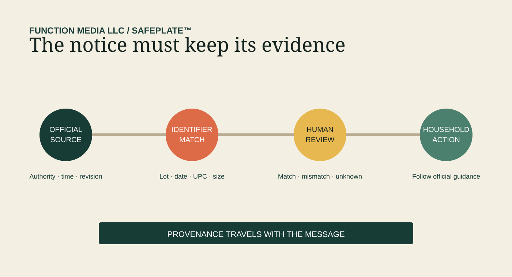
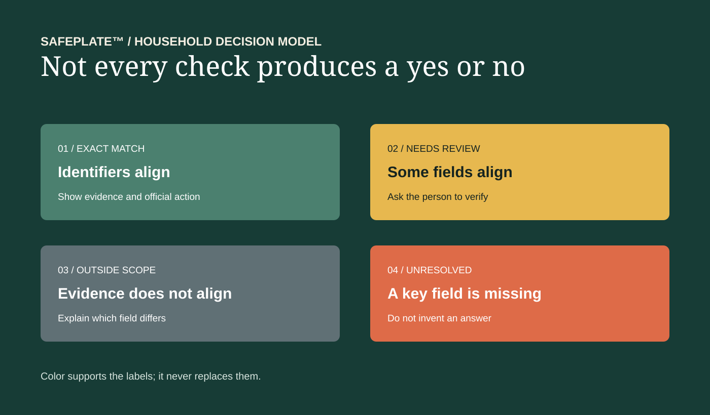

The Kitchen Is the Last Mile
A SAFEPLATE™ field essay from Function Media LLC
At 7:12 on a weekday morning, someone opens the refrigerator looking for lunch. A container is pulled forward. The label is turned toward the light. There is a notice somewhere online about a product that may be unsafe, but the person standing in the kitchen has three immediate questions: Is this the exact item? Is this the affected lot? What should I do now?
That is the final mile of a food recall. It is not a warehouse, a distribution map or a regulatory database. It is a shelf in a home.
Food-safety systems are understandably built around production, processing and distribution. Those records are essential. They help investigators identify where a product came from, where it went and which organizations handled it. But regulatory traceability and household recognition are not the same problem. The FDA’s current Food Traceability Rule does not require firms to retain records linking traceability lot codes to sales to individual consumers. The commercial chain can therefore become much clearer while the last person holding the food still has to make a difficult match.
SAFEPLATE™ is being developed around that gap: not to replace official notices or make a medical judgment, but to help turn verified public information into a clearer, evidence-linked household decision.
The door: a notice has to arrive with its meaning intact
A recall notice may name a company, product, package size, date range, universal product code, establishment number, lot code or distribution territory. The notice may also distinguish a recall from a public-health alert or market withdrawal. Each field carries a different meaning.
The household does not need every field displayed at equal volume. It needs the fields that can answer the question in front of the refrigerator without losing the source behind them.
That demands more than copying a headline into an alert. A responsible system should preserve the issuing authority, publication time, affected identifiers, stated hazard, geographic scope, instructions and later corrections. If a source changes, the system should show that the record changed. If two official sources describe geography differently, it should preserve the disagreement instead of smoothing it into false certainty.
The goal is not a louder warning. It is a warning that remains attached to its evidence.

Figure 1. The household message is the end of an evidence path, not a detached notification.
The shelf: food changes context after purchase
Inside a home, packaging is opened, outer cartons are discarded and food is divided into containers. A prepared ingredient may become part of a meal. One person shops and another cooks. The receipt may be digital, paper or gone.
These ordinary actions weaken the identifiers that make a recall easy to recognize. They also change what “remove the product” means. FDA consumer guidance explains that people may need to clean and sanitize refrigerator surfaces, utensils and counters that contacted recalled food. During some outbreaks, the relevant action is not simply throwing away one package; cross-contact and storage conditions matter.
A useful household layer therefore needs to distinguish at least four conditions:
- an exact identifier match;
- a plausible match that still needs human checking;
- an item outside the stated scope; and
- an unresolved item because the necessary identifier is missing.
Those are not cosmetic labels. They prevent a system from converting partial evidence into an answer it does not have.
The label: recognition should be specific, not theatrical
People are often told to “check their pantry” or “check their refrigerator.” The instruction is sensible, but the checking work can be surprisingly technical. A product name may be shared across sizes. A date can indicate sale, use or production. A number on the package may be a UPC, establishment number or internal lot code. Distribution geography may tell us where the product was sent, not where every affected unit was purchased.
SAFEPLATE’s proposed role is to organize those distinctions. With permission, a person could compare a package or receipt against verified recall identifiers. The system would explain which fields match, which do not, and which remain unknown. It would link back to the official notice and preserve the time of the comparison.
It should never announce a match because two products look alike. It should never infer a manufacturer from packaging color. It should never transform an affected state into a product origin. When evidence is insufficient, “not yet resolved” is the accurate result.
That restraint is part of the technology.

Figure 2. A household checking tool needs explicit uncertainty states; binary safe/unsafe language can exceed the evidence.
The decision: the person remains in control
Household food-safety technology should reduce friction without turning the kitchen into a surveillance environment. That means minimizing data, explaining why a field is requested and avoiding collection simply because it is technically possible.
A receipt can help identify a product. A photograph can help a person locate a code. Neither requires a permanent behavioral profile. A household inventory can remain local or opt-in. A notification can be useful without exposing a family’s entire purchase history.
The design question is not only, “Can the system match this item?” It is also, “What is the least information needed to help this person act responsibly?”
For institutions, the same principle applies at a different scale. Schools, care facilities, food banks and community organizations may need to identify affected inventory across multiple storage locations and document what was checked, isolated or discarded. A purpose-built system can support that work while using role-based access, source lineage and human approval.
The record: the last mile should teach the system
The final household action is usually invisible to the broader response. A product may have been discarded, returned, consumed earlier or never present. That invisibility is understandable; private homes are not compliance nodes.
Still, systems can learn without demanding invasive reporting. Aggregated, voluntary signals can reveal where instructions are confusing, which identifiers are hard to locate and which notices create repeated unresolved checks. Institutions can document response completion without publishing sensitive inventory or personal information.
The result is a better feedback loop: not a claim that every recalled item can be followed into every refrigerator, but a way to understand where public information stops being actionable.
CDC’s 2025 estimates underscore why that matters. Six major pathogens caused an estimated 9.9 million domestically acquired foodborne illnesses, while seven major pathogens were associated with approximately 53,300 hospitalizations and 931 deaths. Those figures describe a national burden. The decision that changes exposure, however, may occur at a kitchen shelf.
A recall is complete only when action becomes possible
The supply chain needs traceability. Regulators need retrievable records. Retailers need accurate product identification. Households need something slightly different: a trustworthy bridge from an official notice to the object in their hands.
That bridge should be specific enough to help, modest enough to admit uncertainty and private enough to deserve use.
SAFEPLATE™ is evidence of Function Media’s broader applied-systems approach: preserve provenance, make uncertainty visible, keep people in authority and design the final decision point as seriously as the upstream data pipeline.
Working with Function Media: Function Media LLC is available for selected paid institutional pilots, purpose-built systems, sponsored development, licensing, integration and strategic partnerships. Partnership information.
Sources
- FDA — Food Recalls: What You Need to Know
- FDA — Food Traceability Rule FAQs
- FDA — Tracking and Tracing of Food
- CDC — Burden of Foodborne Illness
Development-stage disclosure: SAFEPLATE™ is under active development. This essay describes design principles and proposed capabilities, not a completed deployment or measured result.